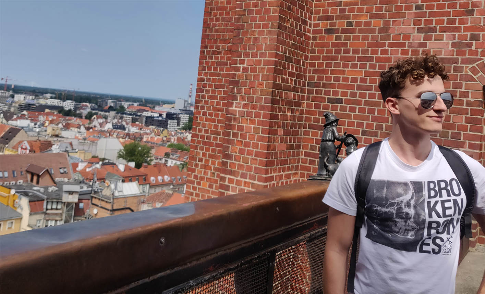

O mnie
Cześć! Nazywam się Maciej Kaszkowiak. Jestem programistą - specjalizuję się w tworzeniu stron i serwisów internetowych. Pasjonuję się - stale się dokształcam i poszerzam swoją wiedzę.
W wolnych chwilach uprawiam sport (ćwiczę siłowo, jeżdżę na rowerze szosowym, biegam), gram w szachy, morsuję, tworzę projekty open-source.
Tworzę strony internetowe w korzystnej cenie.
Utrzymuję stały kontakt z Klientem podczas każdego etapu realizowania strony. Indywidualnie dostosowuję wygląd, funkcjonalność i zastosowane technologie. Przywiązuję wagę do swojej pracy - nie tworzę stron „po łebkach”. Zapewniam profesjonalne podejście.
Efekty dotychczasowej pracy przekonają Państwa lepiej, niż zrobi to sam tekst. Udostępniłem Państwu wybrane zrealizowane projekty wraz ze zdjęciami i opisem realizacji. Za każdym kryje się osiągnięty cel. Zamieściłem również przedstawienie swoich umiejętności.
Serdecznie zachęcam do kontaktu, z chęcią odpowiem na wszystkie pytania :)
